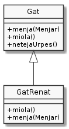

Comportaments específics
El fet que una subclasse hereti tots els membres no privats de la superclasse no vol dir que la subclasse s'hagi de comportar exactament igual que la superclasse, a l'hora d'oferir els serveis que hereta.
Considerem el cas del nostre amic Renat. En Renat és un gat, sí, però un
de molt especial. Només menja després de netejar-se les urpes. Suposem
que Renat redefineix els mètodes menja(Menjar) i netejaUrpes().

El codi tindria el següent aspecte:
1class Gat {
2 public void menja(Menjar menjar) { System.out.println("Gat menja " + menjar); }
3 public void miola() { System.out.println("Gat miola"); }
4 public void netejaUrpes() { System.out.println("Gat netejaUrpes"); }
5 /* … */
6}
7
8class GatRenat extends Gat {
9 @Override
10 public void miola() { System.out.println("GatRenat miola"); }
11
12 @Override
13 public void menja(Menjar menjar) {
14 netejaUrpes();
15 super.menja(menjar);
16 }
17 /* … */
18}
Com que GatRenat no fa res diferent amb el mètode netejaUrpes() del que
fa Gat, no cal que el declari. Quan es cridi el mètode netejaUrpes() a
una instància de GatRenat, directament s'executarà el mètode declarat a la
classe Gat.
@Override
El Renat miola de manera diferent a un gat general. Per aquesta raó,
GatRenat torna a definir el mètode miola(). Aquesta redefinició
es coneix també com overriding i es sol precedir de @Override per
indicar-li-ho a Java.
Si es realitza la crida al mètode miola() des d'una instància de
GatRenat, s'executarà el mètode d'aquesta classe i no de la seva
superclasse.
El mètode menja() de GatRenat també està redefinit, però en aquest
cas presenta una particularitat diferent de miola(). Un cop s'ha
netejat les urpes, en Renat es posa a menjar com ho faria un gat
qualsevol. De fet, la única particularitat és que el Renat, abans de
menjar, sempre es renta les urpes.
Analitzem el codi de GatRenat.menja(Menjar). La primera instrucció és
una crida al mètode netejaUrpes(). Aquest mètode no apareix definit a
la classe GatRenat sinó que és heretat de Gat. Cap problema. Ja
sabem que és un mètode heretat i, per tant, GatRenat el pot considerar
com seu.
Per GatRenat, el mètode netejaUrpes() és tan seu que fins i tot el
podria cridar com this.netejaUrpes().
La segona instrucció és més críptica. El que perseguim és que executi el
codi del mètode menja(Menjar) de la classe Gat però si fem
simplement menja(menjar) estaríem cridant al mateix mètode menja()
que estem definit a GatRenat de manera recursiva que acabaria d'una
manera poc dessitjable: amb la pila d'execució plena i la panxa del gat
buida!
El problema és que el mètode menja(Menjar) heretat pel GatRenat, ha
quedat ocultat per la nova definició del mètode a dins de GatRenat.
Aquest és un fenomen que ja ens resulta familiar, oi? Recordem la situació típica:
1class Gat {
2 private int vides = 7;
3 public void setVides(int vides) {
4 if (vides >= 0) {
5 this.vides = vides;
6 }
7 }
8 /* … */
9}
En aquesta situació, el paràmetre vides oculta l'atribut vides.
Per poder-nos saltar l'ocultació, fèiem servir this.vides de manera
que Java sapigués que ens referíem a vides de la instància i no a
vides paràmetre.
Ara el que se'ns està ocultant, però, és un mètode que va ser declarat a
la superclasse. Intentar fer this.menja(menjar) tindrà exactament el
mateix resultat que si no fem servir this doncs menja() pertany a
la instància i no al mètode.
Per indicar a Java que volem referir-nos a un mètode definit per la
superclasse, en comptes de per la subclasse, el llenguatge ens ofereix la
referència super, que al igual que this ens arriba per defecte, i
que apunta a la part de la instància que és heretada.
D'aquesta manera, en trobar-se super.menja(menjar), Java sap que ens
referim a la definició de Gat i no a la de GatRenat i, finalment,
el nostre amic pot acabar de menjar amb les seves urpes ben netes.